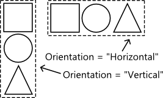
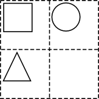
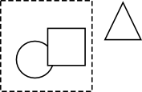

XAML c.f. HTML
XAML is an XML dialect. If you are familiar with HTML there are really only a couple of things in XAML which may not be immediately obvious
-
The many lines of code at the top of the file are XML namespace declarations e.g.
xmlns:d="http://schemas.microsoft.com/expression/blend/2008"puts all the elements and attributes defined in the XML schema at the URL under thednamespace -
Elements and attributes prefixed by e.g.
d:are defined under thednamespace -
Any XAML attribute can be bound to a C# object using the
Binding sytax
. This is the code inside the curly braces inside the strings. e.g.
<TextBlock Text="{Binding Name}" /> -
Some attributes and elements have a period in their name e.g.
Grid.Row="1". These are only valid when the parent is a particular element, in this case aGridelement
Code-behind file
-
When a XAML page file is created, a corresponding
.csor.vbfile is also created. This is the 'code-behind file' -
The class defined in the code behind is defined with a
partialkeyword which means the class is defined in more than one file -
This other file (ending in
.g.i.csor.g.csor the VB equivalents) is automatically generated from XAML and contains theInitializeComponentmethod called in the constructor - The debugger occasionally stops in these files, this almost always means there is an error in the XAML (usually a wrong attribute reference)
-
All the XAML elements are available in the code-behind file as a C#/VB object under the
thisnamespace. If the object is not available try building the project (Ctrl+Shift+B) so the.g.csfiles are generated
Layout elements (StackPanel, Grid, Canvas)
- Most XAML element are self explanatory, however the layout elements are not immediately obvious
Default
- The default layout places elements on top of each other in the top left e.g.
StackPanel
-
StackPanelelements stack child elements either horizontally or vertically depending on theOrientationattribute,
Grid
-
Gridelement defines a table-like structure to contain child elements -
Unlike HTML tables, the child elements specify the cell they belong to using the
Grid.RowandGrid.Columnattributes
Canvas
-
Canvaselement allow for positioning of elements using absolute co-ordinates relative to the canvas - Child elements do not have to be within the canvas region and negative positions can be specified
-
Child elements use the
Canvas.Top,Canvas.Bottom,Canvas.RightandCanvas.Leftattributes to specify position